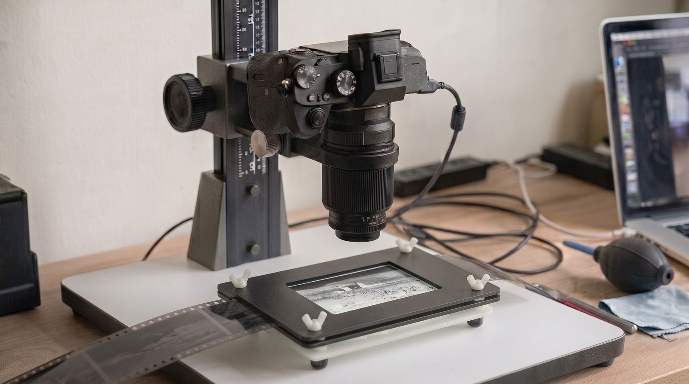
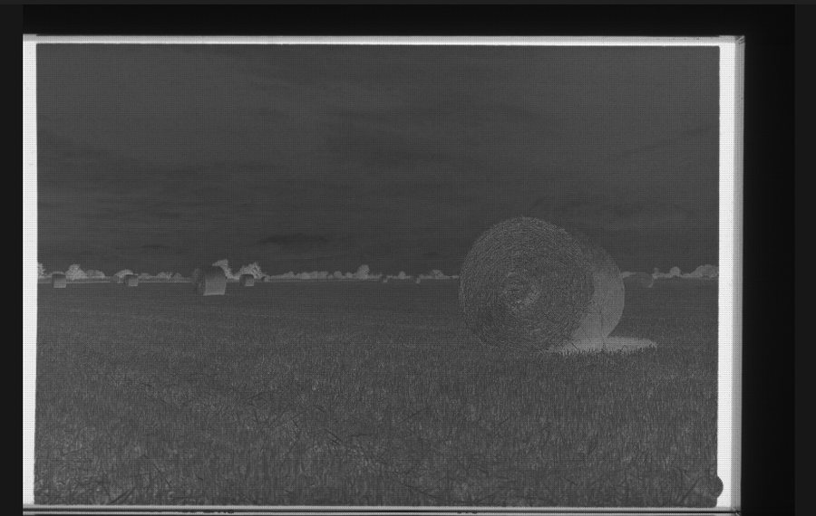
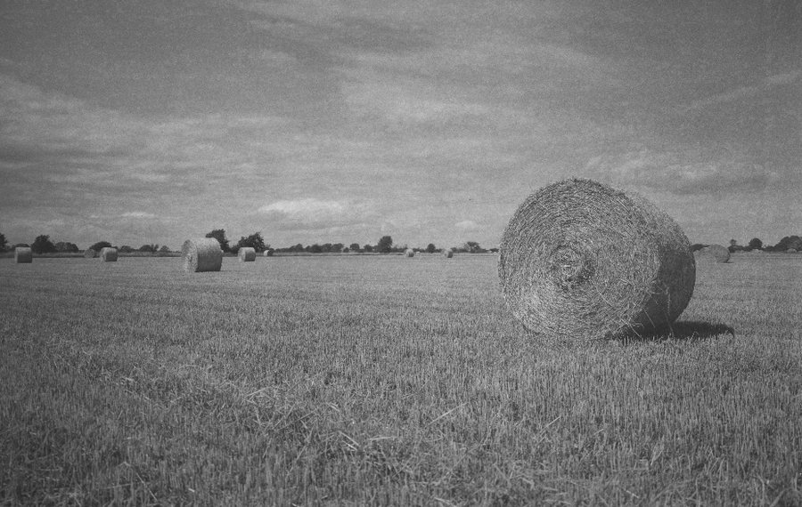
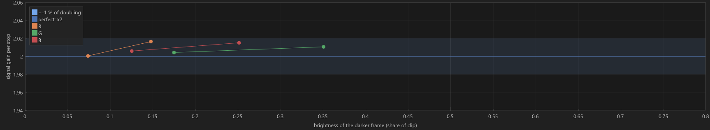
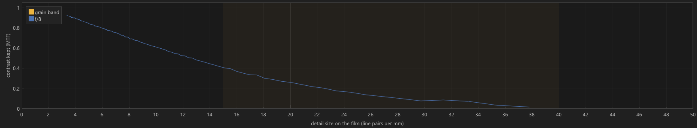
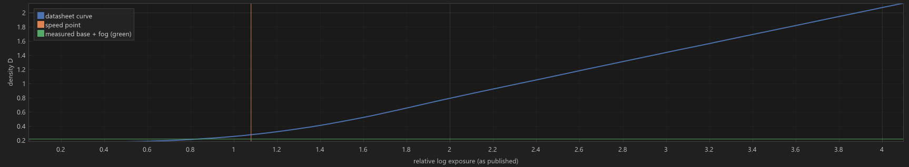
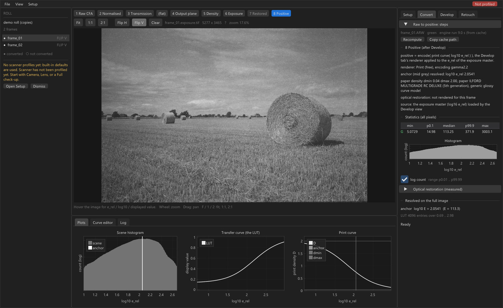

From silver to silicon
Calibrated camera scanning for black-and-white film.

The problem
Photograph a negative, invert it, and the grain often comes back wrong. It clumps. It crawls through the mid-tones. The blame tends to land on the film, the developer, or the converter.
The cause is further up. Between the negative and the file sits an optical system that nobody has measured, and every conversion downstream inherits whatever it happens to be doing.


Measurement — one rig, 25 September 2026
The raw file states a saturation point the sensor never reaches. Take the tag at face value and every density downstream is measured against a ceiling roughly 6 % too low. Small, constant, and in every frame.

At this magnification a pixel covers about 14 µm of film, which puts the limit near 35 lp/mm. A target that appears to resolve 43 is not resolving anything. That is structure the sampling cannot carry, folded back into the picture as something which was never on the film.
Grain is broadband and sits right in that region. Knowing where the limit falls is what makes it possible to stop sharpening past it.

Sony A7, Rodagon 50/4, HP5 Plus in HC-110 dilution B. Another setup reads differently, which is the reason the step exists.
Method
Each stage hands the next a physically defined quantity rather than a picture that has already been interpreted. The print comes last, where a darkroom would put it.

The application
Every stage stays inspectable. Checks report pass, warn or fail with the number and the threshold, and say whether a value was measured, modelled or assumed.

Limits
A measurement tool that oversells itself has already spent the only credit it has.
The family
Camera scanning, conversion, print stage and grain-preserving retouch for black-and-white film.
Digital-negative curves for contact printing, with a soft proof of the printed result.
Tools for dry plates and daguerreotypes.